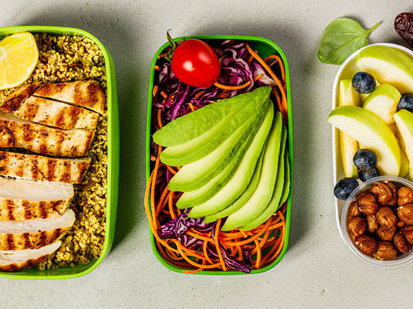
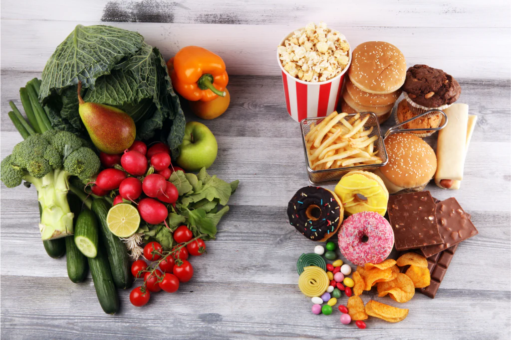

Ages 12–18 are when habits form that can last a lifetime.
Skipping meals, high sugar intake, and ultra-processed foods contribute to low energy, weight gain, and increased risk of chronic diseases like heart disease and diabetes. The issue isn't just knowledge — it's motivation, consistency, and social context. Teens often face limited autonomy over food choices and mixed messages online.
We help young teenagers all around the world recognize poor nutrition habits and improve their eating lifestyle — making healthy eating feel achievable, rewarding, and socially supported.
Everything you need to build a healthier lifestyle, in one place.

Healthy meal ideas and simple recipes to fuel your morning, lunch, and dinner.
View Recipes
Log what you eat and see your daily calories, protein, carbs, and fat at a glance.
Open TrackerLog workouts, unlock badges, and get food recommendations matched to your activity.
Try It BelowTrack your workouts and get recommended foods to refuel.
Workouts Completed
Complete your first workout to get food recommendations!
Learn the truth about common nutrition beliefs.
Myth: Carbohydrates are always unhealthy.
Fact: Carbohydrates provide energy for the body. Whole grains, fruits, and vegetables are healthy sources.
Myth: Skipping meals helps you stay healthy.
Fact: Regular meals help maintain energy levels and support balanced nutrition.
Myth: All fats are bad for you.
Fact: Healthy fats from foods like nuts, fish, and avocados support brain and heart health.
Myth: Only protein helps build strength.
Fact: A balanced diet with carbohydrates, proteins, fats, vitamins, and minerals supports overall health.